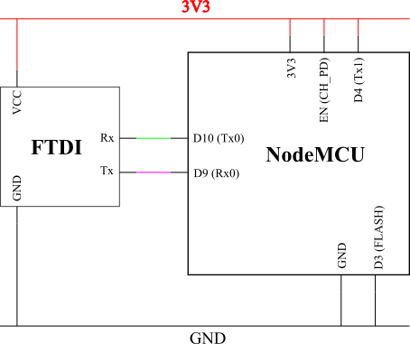

ESP8266¶
| Liens_Web: |
|
|---|
{kind=link}
{kind=link}
Flasher un nouveau Firmware¶
| FTDI_NodeMCU: |  |
|---|
{kind=link}
Ce schéma a été élaboré à partir de différent schéma trouvés sur internet. Cette configuration est la seul qui ai fonctionné. il permet de flasher un ESP8266 à l’aide d’un FTDI232 sans passer par le CH340
| /!\_Attention_/!\: | |
|---|---|
|
|
MAJ du Firmware¶
Liens_Web:
- https://github.com/espressif/esptool
- # Toolbox permettant de falsher le Firmware
Téléchargement et installation d’ESPTool
EspTool permet d’effacer l’ESP ou d’y téléverser un nouveau Fimware. Par défaut, la cible est l’ESP8266. Pour sélectionner un autre composant (comme l’ESP32), il faut consulter la documentation
Il peut être installer directement avec pip :
pip install esptoolOu peut être utiliser directement si on récupère de le dépôt et que l’on travail depuis le dossier extrait à partir de l’archive.
Récupérer le binaire à téléverser
Par défaut le firmware installer dans le NodeMCU est en LUA. Il est possible de mettre un firmaware MicroPython.
- N.B: La programmation de l’ESP depuis l’IDE Arduino écrase le firmware présent dans
l’ESP pour mettre le siens à la place.
Firmware original (LUA)
Firmware MicroPython
Liens_Web: Programmer l’ESP depuis l’IDE Arduino
Liens_Web:
- https://www.fais-le-toi-meme.fr/fr/electronique/tutoriel/programmes-arduino-executes-sur-esp8266-arduino-ide
- # Page (FR) expliquant comment configurer l’IDE Arduino pour pouvoir programmer l’ESP
Déployer un nouveau Firmware
Liens_Web:
- http://docs.micropython.org/en/latest/esp8266/esp8266/tutorial/intro.html
- # Procédure complète pour déployer un nouveau Firmware depuis esptool
Rappel : Identifier les ports COM utilisés
Sous Windows :
'Gestion de l'ordinateur\Gestionnaire de péripérique\Ports (COM et LPT)'Sous Linux :
ls /dev/ttyUSB*Ecraser la flash
esptool.py --port /dev/ttyUSB0 erase_flash # example sous linuxDéployer le nouveau Firmware
esptool.py --port /dev/ttyUSB0 --baud 460800 write_flash --flash_size=detect -fm dio 0 esp8266-20170108-v1.8.7.bin # L'ESP supporte bien un baurate de 460800 pour le déploement du Firmware
Utilisation avec MicroPython¶
| Liens_Web: |
|
|---|---|
| INFOS: |
|
REPL, WebREPL et File System¶
Il est possible d’interagir directement avec l’ESP. Soit depuis le port série, c’est le REPL. Soit au travers d’un WebSocket, c’est le WebREPL. Le deux modes renvoie la même console d’interprétation Python.
N.B: Une fois dans la console Python, il faut tapez ‘help()’ pour connaitre les opérations spécifiques applicable à MicroPython et à LESP8266.
REPL:
- Accessible depuis un terminal sur le port COM de l’ESP avec un Baudrate de 115200
WebREPL:
Accessible depuis un navigateur Web. Le Wifi doit au préalable avoir été configuré depuis le REPL. Il est accessible depuis l’url : http://micropython.org/webrepl/. Le WebSocket associé se présente sous la forme suivante :
ws://<Adresse_ip>:8266 ex: ws://192.168.1.26:8266File_System_(FS): Un système de fichier est présent dans MicroPython. Il permet de déposer des fichiers (en ‘.py’ par exemple) qui seront Exécutés / consultés après la fin de la séquence de démarrage.
- boot.py: C’est un fichier obligatoire qui est créer automatiquement. Il est possible de le modifier, mais ce n’est pas conseiller. Ce fichier est le premier qui sera exécuté au démarrage de l’ESP.
- main.py: Ce fichier sera appeler automatiquement par ‘boot.py’ si il existe. Il n’est pas obligatoire si on utilise l’ESP manuellement (seulement depuis la console python).
Adafruit a créer un CLI permettant de déposer et récupérer des fichiers dans le FS au travers de la liaison série : https://github.com/adafruit/ampy
Conclusion sur MicroPython et l’ESP8266¶
L’ESP8266 est une bestiole sympa qui mérite d’être utilisée. Malheureusement MicroPython est trop limité et trop restrictif. Cela pénalise l’ESP. Pour utiliser l’ESP de façon avancée, il est conseillé de l’utiliser au travers de l’IDE ARDUINO.
WEMOS D1 Mini avec Arduino¶
Installation de la carte dans l’IDE Arduino¶
Liens_Web:
- http://www.wikidebrouillard.org/index.php?title=Wemos_D1_mini
- # Un pas à pas en image et en fr
Installer l’utilitaire de gestion de fichiers (zone SPIFFS)¶
Liens_Web:
- https://github.com/esp8266/arduino-esp8266fs-plugin
- # Package + instructions d’installation
- https://www.instructables.com/id/Using-ESP8266-SPIFFS/
- # Pas à pas d’installation de esp8266fs
Utilisation du système de fichiers (FS)¶
Créer dans le dossier contenant le fichier ‘.ino’ un sous dossier ‘data’
Mettre les fichiers devant être téléverser dans le FS dans le dossier data :
.\data\index.htmlOuvrir le sketch devant être téléverser
Depuis le menu ‘Outils’, sélectionner ‘ESP8266 Sketch Data Upload’. Attention, pas de confirmation, téléversement direct.
/!\ Attention /!\ : Il faut fermer la console série pendant le téléversement des fichiers sinon l’opération échoue.